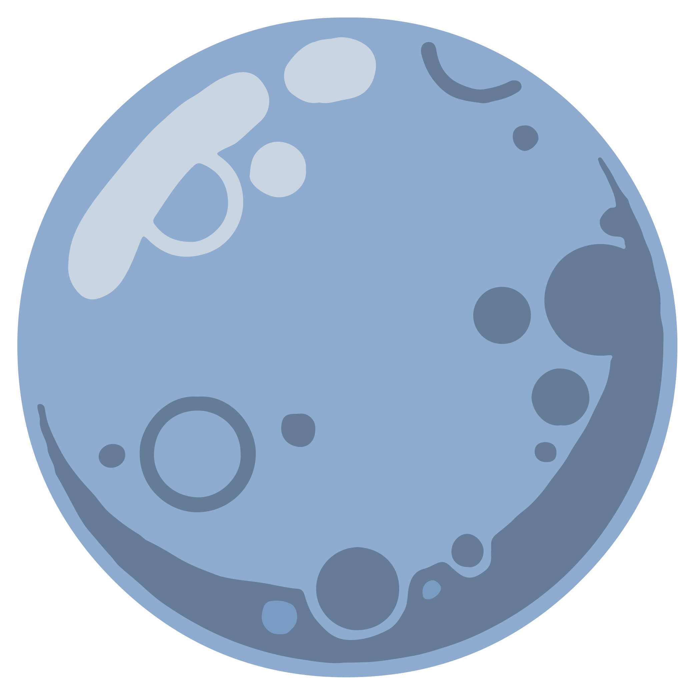
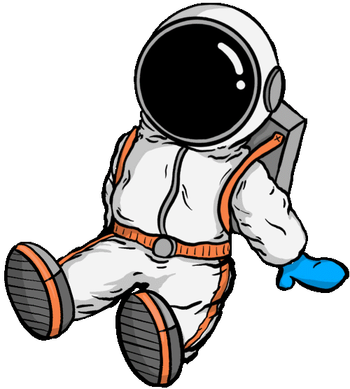
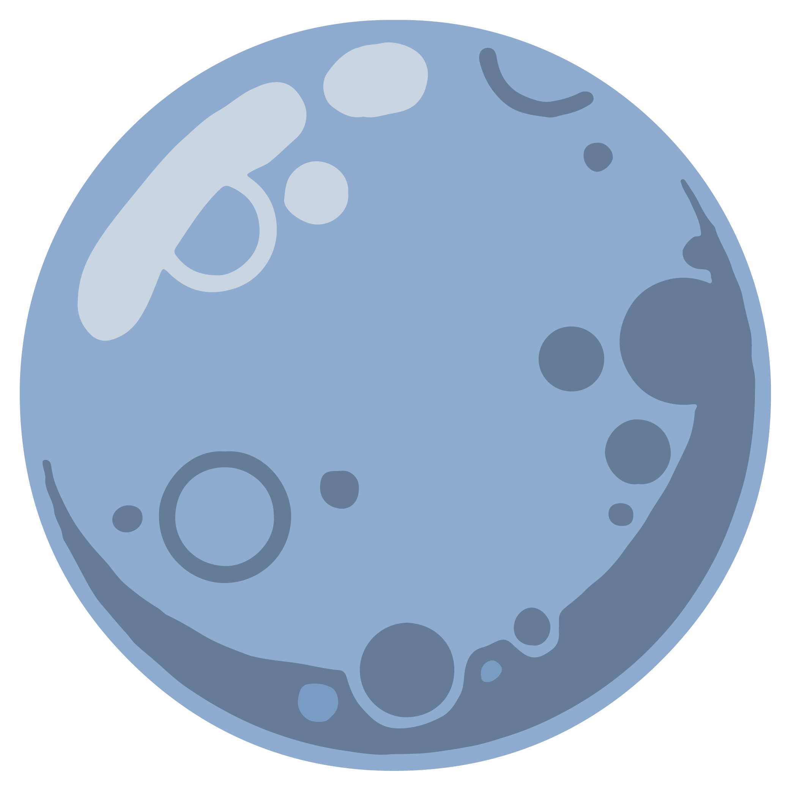
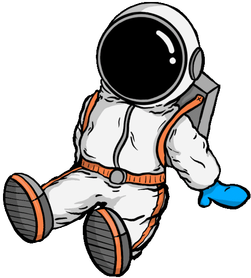

Wait!
I think the wind is picking up.
I Wonder why that is.
Try to tap on Neptune and find out why.
Neptune
Neptune is the eighth and the last planet from the Sun in our solar system!
Did you know that Neptune has 14 moons?